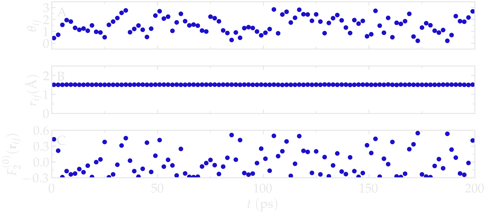
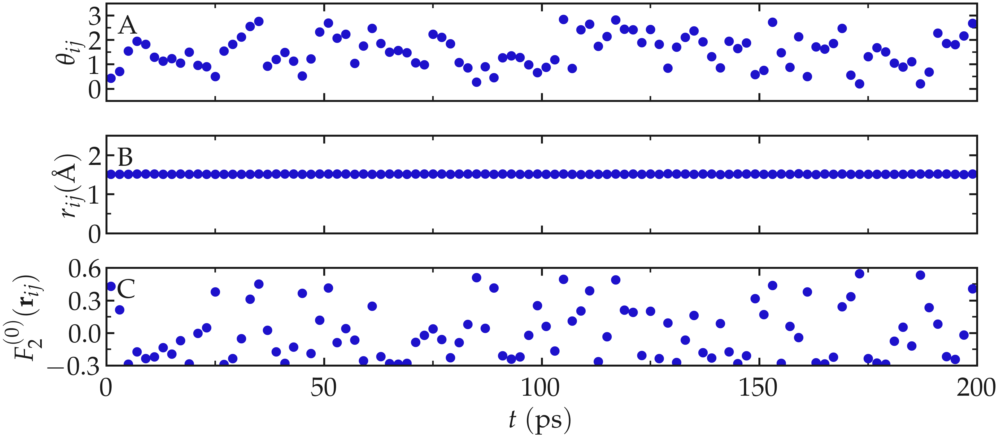
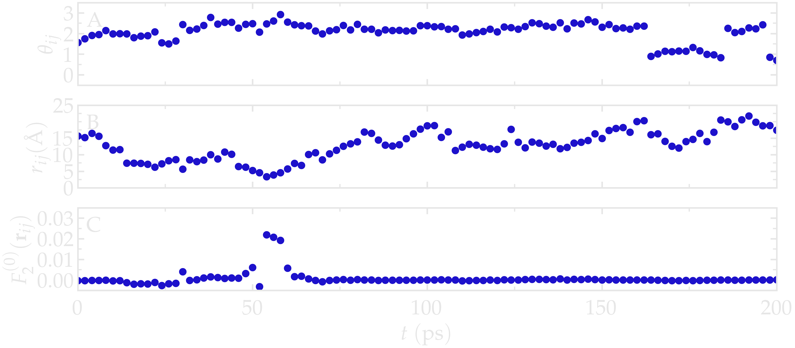
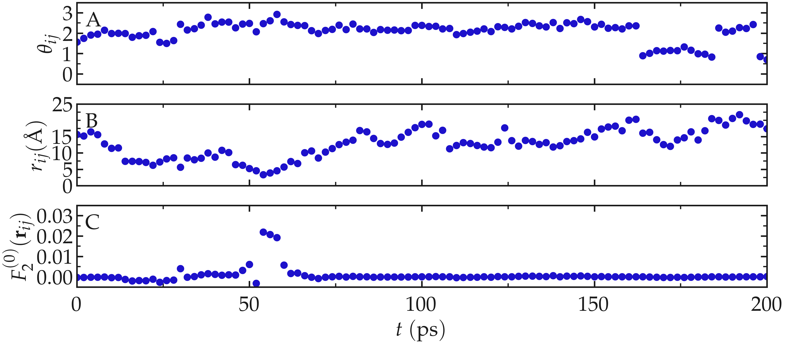

Microscopic origin of relaxation¶
To understand the origin of the relaxation spectra, it is useful to return to the atomic trajectories themselves. The dipolar interaction between two nuclear spins depends on both their separation \(r_{ij}\) and their relative orientation \(\Omega_{ij}\). Following the evolution of these quantities in time therefore provides direct insight into the microscopic origin of NMR relaxation.
As a illustration, we consired a bulk water system. Given that this system is isotropic, the correlation functions satisfy \(G^{(0)} = 6 G^{(1)} = 6/4 G^{(2)}\). It is therefore sufficient to compute only \(G^{(0)}\) and the corresponding spectral density \(J^{(0)}\). In this case, the angular dependence reduces to the polar angle \(\theta_{ij}\), since \(Y_2^{(0)}\) is independent of the azimuthal angle \(\varphi\).
Intra-molecular contribution¶
We first consider the two hydrogen atoms belonging to the same water molecule. Because the present water model (TIP4P/\(\epsilon\)) is rigid, the internuclear distance \(r_{ij}\) remains essentially constant (within the tolerance of the SHAKE algorithm used to enforce molecular rigidity).
The only quantity that changes with time is therefore the orientation of the H-H vector with respect to the external magnetic field, described by the polar angle \(\theta_{ij}\) (see figure below).
The dipolar interaction entering the relaxation equations is described by \(F_2^{(0)}\) (Eq. (7)), which depends on both the internuclear distance and its orientation.
Since \(r_{ij}\) is nearly constant for a rigid water molecule, the fluctuations of \(F_2^{(0)}\) arise almost entirely from the rotational motion of the molecule through changes in \(\theta_{ij}\).
For a typical H-H distance \(a \approx 1.51\,\mathrm{Å}\), \(F_2^{(0)}\) varies between
and
corresponding to the H–H vector being parallel and perpendicular to the magnetic field, respectively.
Thus, although the internuclear distance is essentially fixed, molecular rotation produces substantial fluctuations of the dipolar interaction.


Figure: A) \(\theta_{ij}\) as a function of the time \(t\), where \(i\) and \(j\) refer to two hydrogen atoms located within the same water molecule. B) \(r_{ij}\) as a function of time. C) \(F_{2}^{(0)}\) as a function of time. The temperature is 300 K, and the total number of water molecules is 2000.
Inter-molecular contribution¶
We now consider two hydrogen atoms belonging to different water molecules. In contrast with the intramolecular case, both the internuclear distance and the relative orientation fluctuate because of translational diffusion.
In this case, \(r_{ij}\) fluctuates significantly between \(\approx 2.5\,\mathrm{Å}\), corresponding to molecules occupying their respective hydration shell, to larger values (potentially as large as the box permits).
As can be seen, the function \(F_2^{(0)}\) reaches its largest absolute values, here about \(0.02\,\mathrm{Å}^{-3}\), when \(r_{ij}\) is the shortest.


Figure: A) \(\theta_{ij}\) as a function of the time \(t\), where \(i\) and \(j\) refer to two hydrogen atoms located within two different water molecules. B) \(r_{ij}\) as a function of time. C) \(F_2^{(0)}\) as a function of time. The temperature is 300 K, and the total number of water molecules is 2000.